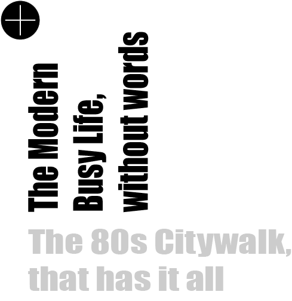
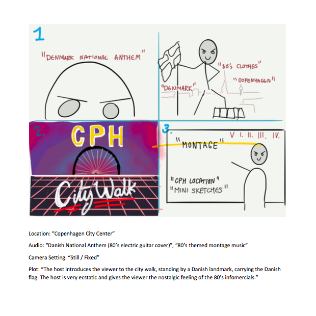

← back
← about me
Project List
01.04. Responsive Website - Op Art
01.05. Basic Redesign
02.01. Simple Animation - Mr. Ball
02.02. Storytelling & Character Design
02.03.02. Interactive Animation
02.03. ProjectPools - the "difficult" Magic Pie and the "easy" gallery
Interactive Trailor - Dr. Strangelove
03. Basic Video
04. Basic UX / Digital Business
Theme 3: Basic Video

- hide -
Busy
tracing mask
frame by frame
PLAY

original assignment
PLAY